import numpy as np
import matplotlib.pyplot as plt
%config InlineBackend.figure_formats = ['png']Lab: Linear Transformations and Neural Networks
linear-algebra
In the previous notes you learned that matrices represent linear transformations. In this lab, you will build transformation functions step by step, see what they do to basis vectors, and then apply them to a real image (a leaf made of 329,076 points). Finally, you will see how the exact same matrix multiplication powers a simple neural network.
Setup
Part 1: Linear Transformations
Loading the Image
An image in the plane is just a collection of points. We store it as a \(2 \times n\) matrix where each column is a point \(\begin{bmatrix}x\\y\end{bmatrix}\).
img = np.loadtxt('../../media/image.txt')
print(f'Shape: {img.shape} → {img.shape[1]:,} points in the plane')Shape: (2, 329076) → 329,076 points in the planefig, ax = plt.subplots(1, 1, figsize=(5, 6))
ax.scatter(img[0], img[1], s=0.01, color='#2E8B57')
ax.set_aspect('equal')
ax.set_title('Original leaf', fontsize=12, color='gray')
ax.axis('off')
plt.tight_layout()
plt.show()A Helper Function
Every transformation we build will take a matrix of vectors and return the transformed matrix. To see what a transformation does to the standard basis vectors \(e_1 = \begin{bmatrix}1\\0\end{bmatrix}\) and \(e_2 = \begin{bmatrix}0\\1\end{bmatrix}\), we use this helper:
def transform_vectors(T, v1, v2):
"""Apply transformation T to vectors v1 and v2, return results side by side."""
V = np.hstack((v1, v2))
W = T(V)
return W
e1 = np.array([[1], [0]])
e2 = np.array([[0], [1]])And a plotting function to visualize how basis vectors change (this is a helper utility, you can skip reviewing the implementation and just look at the outputs below):
Note
plot_transformation helper (expand to see implementation)
def plot_transformation(T, e1, e2):
"""Plot original and transformed basis vectors."""
original = np.hstack((e1, e2))
transformed = T(original)
fig, ax = plt.subplots(1, 1, figsize=(6, 6))
# Original basis vectors (solid)
ax.quiver(0, 0, e1[0,0], e1[1,0], angles='xy', scale_units='xy', scale=1,
color='#4682B4', width=0.015, zorder=5)
ax.quiver(0, 0, e2[0,0], e2[1,0], angles='xy', scale_units='xy', scale=1,
color='#2E8B57', width=0.015, zorder=5)
# Transformed basis vectors (faded)
ax.quiver(0, 0, transformed[0,0], transformed[1,0], angles='xy', scale_units='xy', scale=1,
color='#4682B4', width=0.015, alpha=0.4, zorder=4)
ax.quiver(0, 0, transformed[0,1], transformed[1,1], angles='xy', scale_units='xy', scale=1,
color='#2E8B57', width=0.015, alpha=0.4, zorder=4)
# Labels
ax.text(e1[0,0]+0.1, e1[1,0]+0.1, '$e_1$', fontsize=11, fontweight='bold', color='#4682B4')
ax.text(e2[0,0]+0.1, e2[1,0]+0.1, '$e_2$', fontsize=11, fontweight='bold', color='#2E8B57')
ax.text(transformed[0,0]+0.1, transformed[1,0]+0.1,
f'$T(e_1)$', fontsize=10, color='#4682B4', alpha=0.7)
ax.text(transformed[0,1]+0.1, transformed[1,1]+0.1,
f'$T(e_2)$', fontsize=10, color='#2E8B57', alpha=0.7)
ax.set_xlim(-3, 3)
ax.set_ylim(-3, 3)
ax.set_xticks(range(-3, 4))
ax.set_yticks(range(-3, 4))
ax.set_aspect('equal')
ax.grid(True, linestyle='--', alpha=0.4)
ax.axhline(0, color='black', linewidth=0.8)
ax.axvline(0, color='black', linewidth=0.8)
plt.tight_layout()
plt.show()Now let’s build transformations one by one.
1. Horizontal Scaling (Dilation)
Horizontal scaling by factor 2 stretches the \(x\)-coordinate while leaving \(y\) unchanged. The matrix is:
\[A = \begin{bmatrix}2 & 0\\0 & 1\end{bmatrix}\]
\(e_1 = (1,0)\) maps to \((2, 0)\), and \(e_2 = (0,1)\) stays at \((0, 1)\).
def T_hscaling(v):
A = np.array([[2, 0], [0, 1]])
return A @ v
# What happens to the basis vectors?
print("Transformation matrix:\n", np.array([[2, 0], [0, 1]]))
print("\nT(e1) =", T_hscaling(e1).flatten())
print("T(e2) =", T_hscaling(e2).flatten())Transformation matrix:
[[2 0]
[0 1]]
T(e1) = [2 0]
T(e2) = [0 1]plot_transformation(T_hscaling, e1, e2)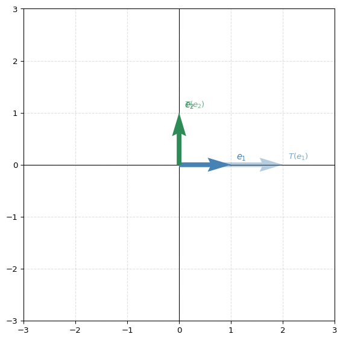
Now apply to the full leaf image:
fig, ax = plt.subplots(1, 1, figsize=(8, 6))
ax.scatter(img[0], img[1], s=0.01, color='#2E8B57', label='Original')
transformed = T_hscaling(img)
ax.scatter(transformed[0], transformed[1], s=0.01, color='gray', label='Scaled ×2 horizontally')
ax.set_aspect('equal')
ax.legend(markerscale=30, fontsize=10)
ax.set_title('Horizontal scaling applied to the leaf', fontsize=12, color='gray')
ax.axis('off')
plt.tight_layout()
plt.show()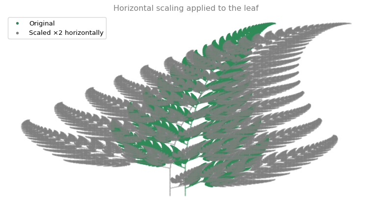
2. Reflection About the \(y\)-axis
Reflection negates the \(x\)-coordinate:
\[A = \begin{bmatrix}-1 & 0\\0 & 1\end{bmatrix}\]
def T_reflection_yaxis(v):
A = np.array([[-1, 0], [0, 1]])
return A @ v
print("T(e1) =", T_reflection_yaxis(e1).flatten())
print("T(e2) =", T_reflection_yaxis(e2).flatten())T(e1) = [-1 0]
T(e2) = [0 1]plot_transformation(T_reflection_yaxis, e1, e2)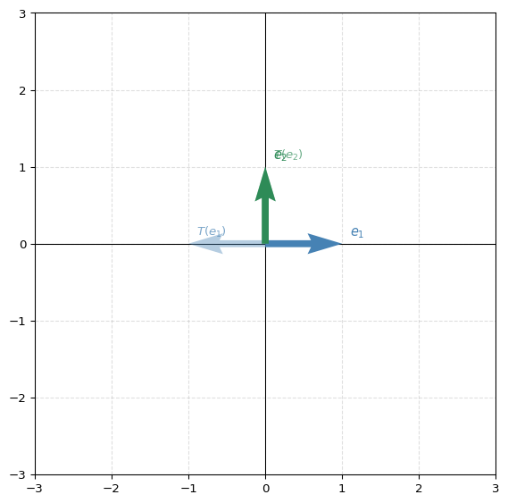
fig, ax = plt.subplots(1, 1, figsize=(8, 6))
ax.scatter(img[0], img[1], s=0.01, color='#2E8B57', label='Original')
transformed = T_reflection_yaxis(img)
ax.scatter(transformed[0], transformed[1], s=0.01, color='gray', label='Reflected')
ax.set_aspect('equal')
ax.legend(markerscale=30, fontsize=10)
ax.set_title('Reflection applied to the leaf', fontsize=12, color='gray')
ax.axis('off')
plt.tight_layout()
plt.show()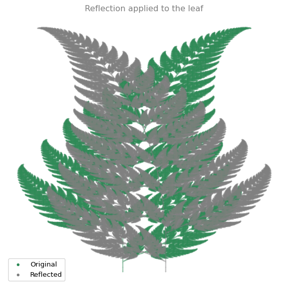
3. Stretching by a Scalar
Uniform stretching by factor \(a\) scales both coordinates equally:
\[A = \begin{bmatrix}a & 0\\0 & a\end{bmatrix} = aI\]
This is the same as multiplying every vector by \(a\).
def T_stretch(a, v):
A = np.array([[a, 0], [0, a]])
return A @ v
# With a = 0.5 (shrink)
print("T_stretch(0.5, e1) =", T_stretch(0.5, e1).flatten())
print("T_stretch(0.5, e2) =", T_stretch(0.5, e2).flatten())T_stretch(0.5, e1) = [0.5 0. ]
T_stretch(0.5, e2) = [0. 0.5]fig, ax = plt.subplots(1, 1, figsize=(8, 6))
ax.scatter(img[0], img[1], s=0.01, color='#2E8B57', label='Original')
ax.scatter(T_stretch(0.5, img)[0], T_stretch(0.5, img)[1], s=0.01, color='gray', label='Stretched ×0.5 (shrunk)')
ax.set_aspect('equal')
ax.legend(markerscale=30, fontsize=10)
ax.set_title('Uniform stretch (factor 0.5)', fontsize=12, color='gray')
ax.axis('off')
plt.tight_layout()
plt.show()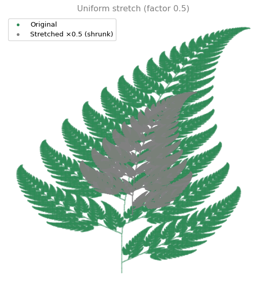
4. Horizontal Shear
A horizontal shear with parameter \(m\) maps \((x, y)\) to \((x + my, y)\):
\[A = \begin{bmatrix}1 & m\\0 & 1\end{bmatrix}\]
Notice that \(e_1\) is unchanged, but \(e_2 = (0, 1)\) maps to \((m, 1)\). The \(y\)-axis tilts.
def T_hshear(m, v):
A = np.array([[1, m], [0, 1]])
return A @ v
print("With m = 0.5:")
print("T(e1) =", T_hshear(0.5, e1).flatten())
print("T(e2) =", T_hshear(0.5, e2).flatten(), " ← e2 shifted horizontally!")With m = 0.5:
T(e1) = [1. 0.]
T(e2) = [0.5 1. ] ← e2 shifted horizontally!plot_transformation(lambda v: T_hshear(0.5, v), e1, e2)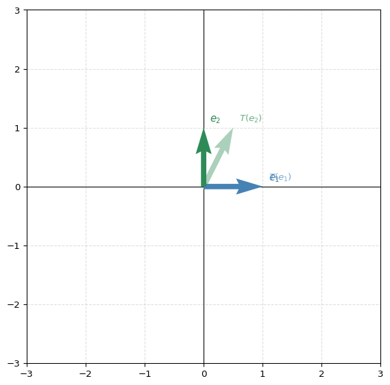
fig, ax = plt.subplots(1, 1, figsize=(8, 6))
ax.scatter(img[0], img[1], s=0.01, color='#2E8B57', label='Original')
transformed = T_hshear(0.5, img)
ax.scatter(transformed[0], transformed[1], s=0.01, color='gray', label='Sheared ($m = 0.5$)')
ax.set_aspect('equal')
ax.legend(markerscale=30, fontsize=10)
ax.set_title('Horizontal shear applied to the leaf', fontsize=12, color='gray')
ax.axis('off')
plt.tight_layout()
plt.show()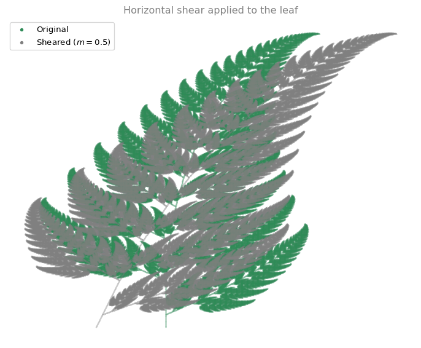
5. Rotation
Rotation by angle \(\theta\) counterclockwise:
\[A = \begin{bmatrix}\cos\theta & -\sin\theta\\\sin\theta & \cos\theta\end{bmatrix}\]
def T_rotation(theta, v):
A = np.array([[np.cos(theta), -np.sin(theta)],
[np.sin(theta), np.cos(theta)]])
return A @ v
# Rotate 45 degrees
theta = np.pi / 4
print(f"Rotation by {np.degrees(theta):.0f}°:")
print("T(e1) =", T_rotation(theta, e1).flatten().round(3))
print("T(e2) =", T_rotation(theta, e2).flatten().round(3))Rotation by 45°:
T(e1) = [0.707 0.707]
T(e2) = [-0.707 0.707]plot_transformation(lambda v: T_rotation(np.pi/4, v), e1, e2)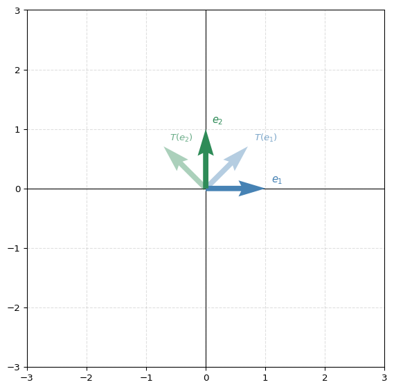
fig, ax = plt.subplots(1, 1, figsize=(8, 6))
ax.scatter(img[0], img[1], s=0.01, color='#2E8B57', label='Original')
transformed = T_rotation(np.pi/4, img)
ax.scatter(transformed[0], transformed[1], s=0.01, color='gray', label='Rotated 45°')
ax.set_aspect('equal')
ax.legend(markerscale=30, fontsize=10)
ax.set_title('Rotation by $\\pi/4$ (45°)', fontsize=12, color='gray')
ax.axis('off')
plt.tight_layout()
plt.show()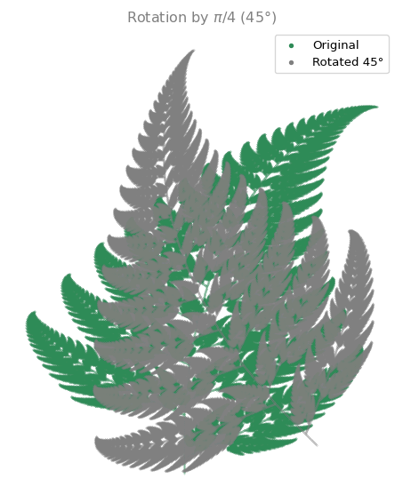
6. Combining Transformations
Since applying two transformations in sequence is matrix multiplication (\(B(Av) = (BA)v\)), you can compose them. Let’s rotate by 30° AND stretch by 1.5:
def T_rotation_and_stretch(theta, a, v):
R = np.array([[np.cos(theta), -np.sin(theta)],
[np.sin(theta), np.cos(theta)]])
S = np.array([[a, 0], [0, a]])
# First stretch, then rotate: R @ S @ v
return R @ S @ v
print("Combined matrix (rotate 30° then stretch 1.5):")
theta = np.pi/6
R = np.array([[np.cos(theta), -np.sin(theta)],
[np.sin(theta), np.cos(theta)]])
S = np.array([[1.5, 0], [0, 1.5]])
print(R @ S)Combined matrix (rotate 30° then stretch 1.5):
[[ 1.29903811 -0.75 ]
[ 0.75 1.29903811]]fig, ax = plt.subplots(1, 1, figsize=(8, 6))
ax.scatter(img[0], img[1], s=0.01, color='#2E8B57', label='Original')
transformed = T_rotation_and_stretch(np.pi/6, 1.5, img)
ax.scatter(transformed[0], transformed[1], s=0.01, color='gray', label='Rotated 30° + stretched ×1.5')
ax.set_aspect('equal')
ax.legend(markerscale=30, fontsize=10)
ax.set_title('Combined: rotation + stretch', fontsize=12, color='gray')
ax.axis('off')
plt.tight_layout()
plt.show()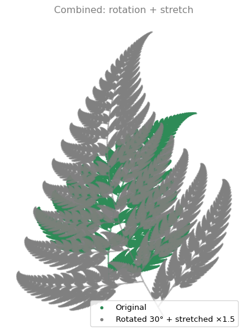
Does Order Matter?
Let’s apply shear then rotate, and compare with rotate then shear:
fig, axes = plt.subplots(1, 2, figsize=(12, 5))
# Shear first, then rotate
sheared = T_hshear(0.5, img)
shear_then_rotate = T_rotation(np.pi/4, sheared)
ax = axes[0]
ax.scatter(shear_then_rotate[0], shear_then_rotate[1], s=0.01, color='#CC7000')
ax.set_aspect('equal')
ax.set_title('Shear first, then rotate', fontsize=12, color='gray')
ax.axis('off')
# Rotate first, then shear
rotated = T_rotation(np.pi/4, img)
rotate_then_shear = T_hshear(0.5, rotated)
ax = axes[1]
ax.scatter(rotate_then_shear[0], rotate_then_shear[1], s=0.01, color='#4682B4')
ax.set_aspect('equal')
ax.set_title('Rotate first, then shear', fontsize=12, color='gray')
ax.axis('off')
plt.tight_layout()
plt.show()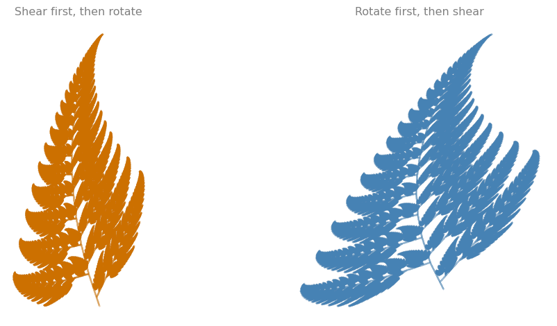
The results are different. Matrix multiplication is not commutative: \(BA \neq AB\) in general.
Part 2: Neural Networks
Everything you just did was matrix multiplication: \(w = Av\). A neural network does the same thing, with a different purpose. Instead of transforming images, it transforms input features into predictions.
Linear Regression as Matrix Multiplication
A linear regression model with two inputs \(x_1, x_2\) predicts:
\[\hat{y} = w_1 x_1 + w_2 x_2 + b = Wx + b\]
where \(W = \begin{bmatrix}w_1 & w_2\end{bmatrix}\) is a \(1 \times 2\) weight matrix, \(x = \begin{bmatrix}x_1\\x_2\end{bmatrix}\) is the input, and \(b\) is a bias.
A Single-Perceptron Neural Network
For \(m\) training examples at once, store all inputs in a \(2 \times m\) matrix \(X\). The network computes:
\[Z = WX + b\]
The output \(Z\) is \(1 \times m\) (one prediction per example). This is one matrix multiplication plus a bias.
Implementation
def initialize_parameters():
"""Initialize weights and bias with small random values."""
W = np.random.randn(1, 2) * 0.01
b = np.zeros((1, 1))
return {'W': W, 'b': b}
def forward_propagation(X, parameters):
"""Forward pass: Z = WX + b"""
W = parameters['W']
b = parameters['b']
Z = W @ X + b
return Z
def compute_cost(Y_hat, Y):
"""Mean squared error: (1/2m) * sum((y_hat - y)^2)"""
m = Y.shape[1]
cost = (1 / (2 * m)) * np.sum((Y_hat - Y) ** 2)
return costTraining with Gradient Descent
The network learns by adjusting \(W\) and \(b\) to minimize the cost. The gradients for MSE are:
\[\frac{\partial \mathcal{L}}{\partial W} = \frac{1}{m}(Z - Y)X^T \qquad \frac{\partial \mathcal{L}}{\partial b} = \frac{1}{m}\sum(Z - Y)\]
def nn_model(X, Y, num_iterations=1000, learning_rate=0.01, print_cost=False):
"""Train a single-perceptron neural network."""
parameters = initialize_parameters()
for i in range(num_iterations):
# Forward propagation
Y_hat = forward_propagation(X, parameters)
# Cost
cost = compute_cost(Y_hat, Y)
# Gradients
m = X.shape[1]
dW = (1/m) * (Y_hat - Y) @ X.T
db = (1/m) * np.sum(Y_hat - Y)
# Update parameters
parameters['W'] -= learning_rate * dW
parameters['b'] -= learning_rate * db
if print_cost and i % 200 == 0:
print(f' Iteration {i:4d}: cost = {cost:.6f}')
return parametersTraining on Synthetic Data
Let’s generate data from a known relationship \(y = 3x_1 - 2x_2 + 1\) and see if the network can learn it:
np.random.seed(42)
# True relationship: y = 3*x1 - 2*x2 + 1 + noise
m = 50
X_train = np.random.randn(2, m)
Y_train = 3 * X_train[0:1] - 2 * X_train[1:2] + 1 + 0.1 * np.random.randn(1, m)
print(f"Training data: X is {X_train.shape}, Y is {Y_train.shape}")
print(f"True parameters: W = [3, -2], b = 1\n")
parameters = nn_model(X_train, Y_train, num_iterations=2000, learning_rate=0.1, print_cost=True)
print(f"\nLearned: W = {parameters['W'].round(4)}, b = {parameters['b'].round(4)}")Training data: X is (2, 50), Y is (1, 50)
True parameters: W = [3, -2], b = 1
Iteration 0: cost = 4.863479
Iteration 200: cost = 0.004731
Iteration 400: cost = 0.004731
Iteration 600: cost = 0.004731
Iteration 800: cost = 0.004731
Iteration 1000: cost = 0.004731
Iteration 1200: cost = 0.004731
Iteration 1400: cost = 0.004731
Iteration 1600: cost = 0.004731
Iteration 1800: cost = 0.004731
Learned: W = [[ 2.989 -2.0255]], b = [[0.994]]The network learned weights close to \([3, -2]\) and bias close to 1.
Predictions vs Actual
def predict(X, parameters):
"""Make predictions using learned parameters."""
return parameters['W'] @ X + parameters['b']
Y_pred = predict(X_train, parameters)
fig, ax = plt.subplots(1, 1, figsize=(6, 6))
ax.scatter(Y_train.flatten(), Y_pred.flatten(), s=20, color='#4682B4', alpha=0.7)
ax.plot([-8, 8], [-8, 8], '--', color='#CC0000', lw=1.5, label='Perfect prediction')
ax.set_xlabel('Actual $y$', fontsize=11)
ax.set_ylabel('Predicted $\\hat{y}$', fontsize=11)
ax.set_title('Predictions vs actual values', fontsize=12, color='gray')
ax.legend(fontsize=10)
ax.grid(True, linestyle='--', alpha=0.4)
ax.set_aspect('equal')
plt.tight_layout()
plt.show()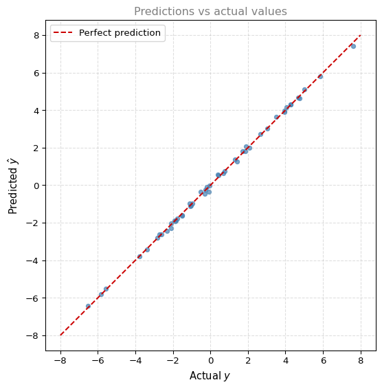
Points close to the red dashed line means accurate predictions. The network learned the linear relationship through gradient descent, using nothing but matrix multiplication at each step.
Key Takeaway
Forward propagation in a neural network is the same operation as applying a linear transformation:
| Linear Transformation | Neural Network |
|---|---|
| \(w = Av\) | \(Z = WX + b\) |
| Matrix \(A\) defines the transformation | Weights \(W\) and bias \(b\) define the model |
| You choose \(A\) | The network learns \(W\) and \(b\) from data |
The difference: in transformations you design the matrix by hand. In a neural network, the matrix is learned from data through optimization.
Previous: Linear Transformations | Next: Determinants In-depth